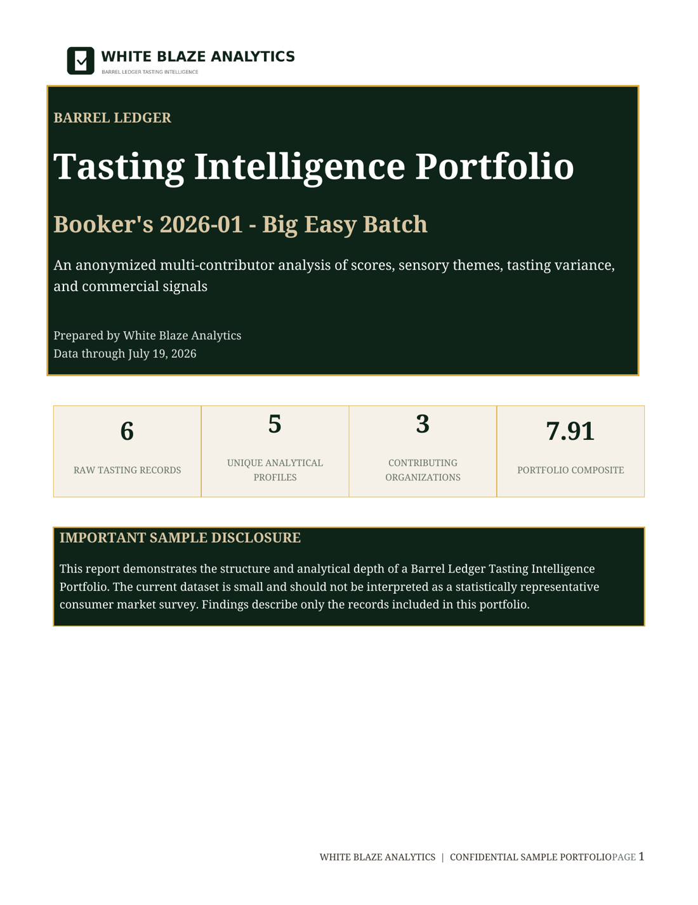

Structured dataset
Normalized tasting records
Eligible nose, palate, finish, sensory descriptors, scores, rebuy intent, blind status, and bottle or release attributes.
Barrel Ledger Tasting Intelligence Portfolios
Select the distilleries, producers, brands, bottles, releases, proof ranges, age statements, finishes, or competitive sets you want to study. White Blaze Analytics assembles a permissioned portfolio from available Barrel Ledger records while keeping every contributing organization and reviewer 100% anonymous to the buyer.
What you receive
Each portfolio is curated around a buyer-defined question and delivered with standardized records, a concise executive interpretation, and transparent scope documentation.
Structured dataset
Eligible nose, palate, finish, sensory descriptors, scores, rebuy intent, blind status, and bottle or release attributes.
Portfolio analysis
Frequency distributions, score ranges, sensory concentration, comparison groups, and notable outliers within the selected scope.
Executive summary
A concise summary of the strongest findings, limitations, and questions the portfolio can support for product, brand, or market decisions.
Contributor privacy
Buyer-facing portfolios use analytical aliases only. Contributor names, organization names, domains, social accounts, and identifying metadata are not disclosed.
See the finished product
This 12-page Booker's 2026-01 sample demonstrates how Barrel Ledger records can be transformed into a formal, decision-ready intelligence asset with transparent methodology and transparent, reproducible findings.

Included in the sample
Illustrative sample based on the current Barrel Ledger records available for this release. Contributor identities are replaced with anonymous analytical labels and are never disclosed to the buyer. The small dataset is not presented as a statistically representative consumer survey.
Standard portfolio pricing
The tiers below are designed for one defined research scope and the available qualifying records that match it. Final record count is confirmed before purchase.
Focused view of one bottle family, limited competitive set, or emerging category question.
Broader bottle, producer, or category perspective with stronger benchmarking depth.
Robust portfolio intelligence for product, brand, distillery, or competitive strategy.
Multi-brand, multi-release, or broad market analysis with deeper segmentation.
Large-scale or recurring intelligence program designed around ongoing portfolio monitoring.
Define the portfolio
| Scope dimension | Examples | Potential use |
|---|---|---|
| Distillery or producer | All available qualifying records tied to one producer or a defined peer group | Portfolio position, sensory identity, proof or age strategy |
| Brand or bottle family | Core expressions, limited releases, annual releases, or competitive bottle sets | Brand architecture and release performance |
| Batch or single barrel | Specific batch codes, annual releases, private selections, or picker portfolios | Release variance and single-barrel program evaluation |
| Market attribute | Proof range, age range, finish type, price tier, or whiskey category | Consumer preference and product-development context |
Custom portfolio request
Provide the bottles, producers, distilleries, releases, or market attributes you want included. We will confirm available qualifying records and return a proposed scope, record count, delivery package, and price.